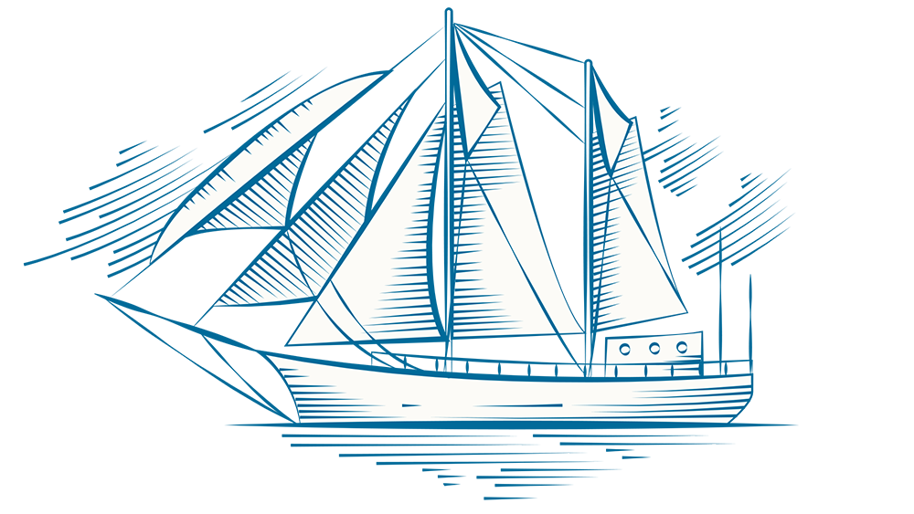
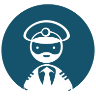

Mon parcours professionnel
Jordan Andrevon
27 ans
17 Rue Saint Jacques
38000 Grenoble
07 77 07 68 55
j.andrevon@orange.fr


Expériences professionnelles
- St Microelectronics en qualité d'opérateur en salle blanche - Eté 2008-2010
- Stage GRETA du Lycée Vaucanson / Service Infographie
- Stage ARCA Computing - Réalisation de la charte graphique du site Kowork.fr (4 semaines)
- Stage Préfécture de l'isère - Service des permis de conduire (4 semaines)
- Stage NOVOTEL Employé polyvalent petits travaux de rénovation et entretient des chambres (4 semaines)
Formations et diplômes
- 2014 - 2015 Formation Infographiste Metteur en page (ADAPT de Troyes)
- 2013 - Pré-Orientation de 3 mois
- 2010 - 2012 BEP Métiers de la comptabilité
- 2008 - 2010 CAP Maintenance et hygiène des locaux
Compétences informatiques
Centres d'intéréts
- Musique
- Jeux vidéos
- Cinéma
- Webdesign
- Graphisme
- Lecture